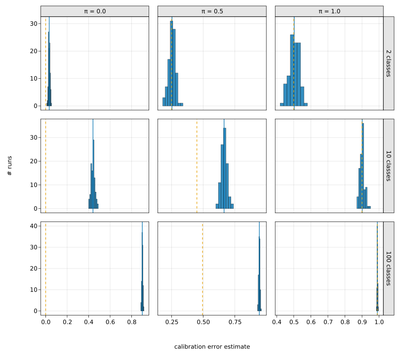
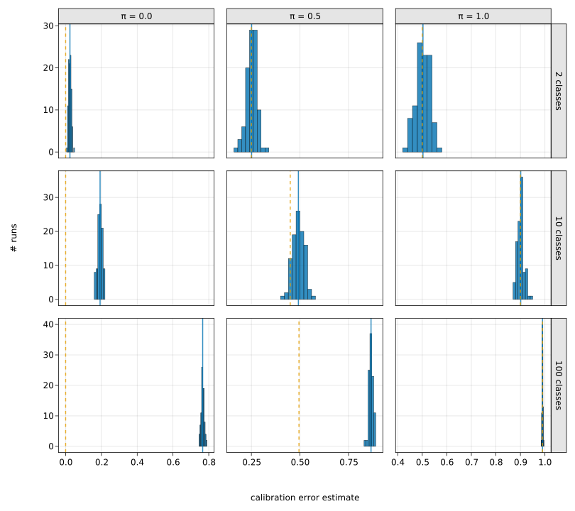
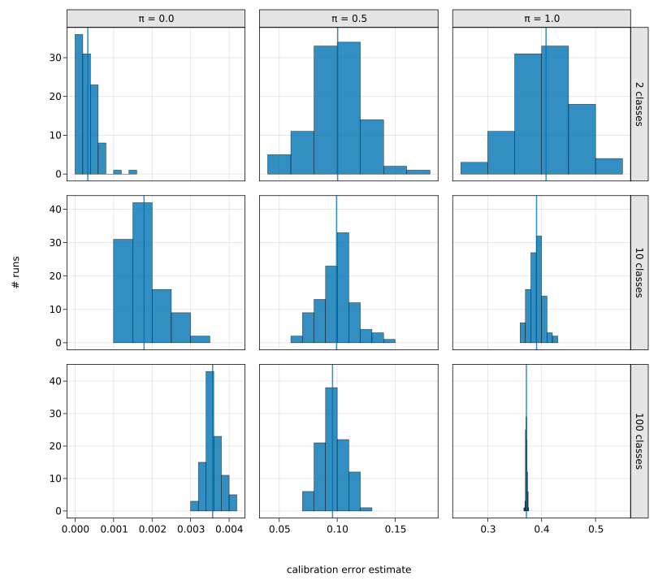
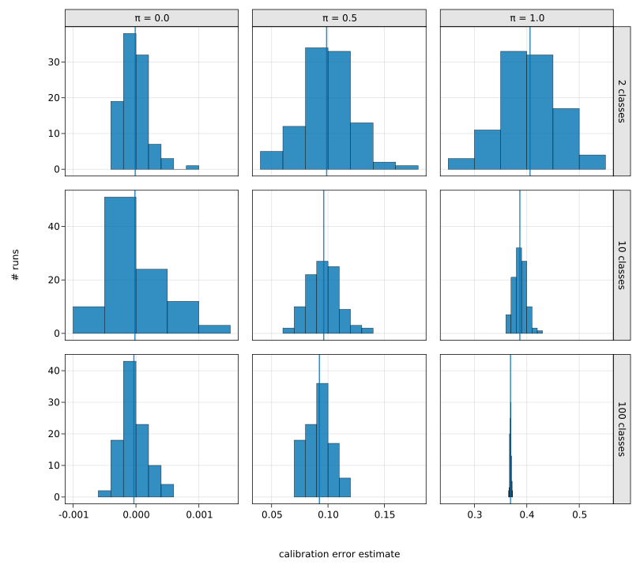
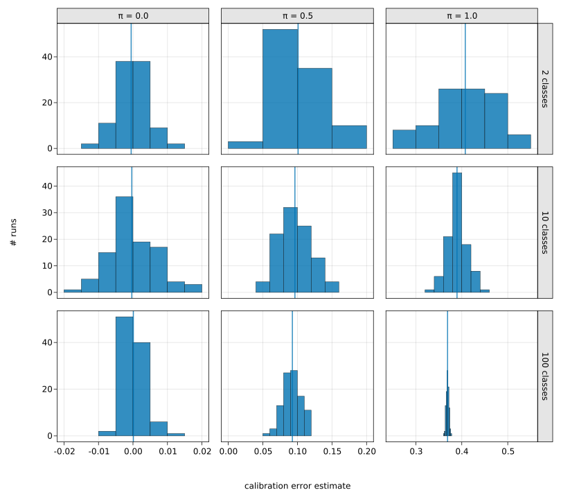

Distribution of calibration error estimates

You are seeing the HTML output generated by Documenter.jl and Literate.jl from the Julia source file. The corresponding notebook can be viewed in nbviewer.
Packages
using CairoMakie
using CalibrationErrors
using Distributions
using StatsBase
using LinearAlgebra
using Random
using StatisticsIntroduction
This example is taken from the publication "Calibration tests in multi-class classification: A unifying framework" by Widmann, Lindsten, and Zachariah (2019).
We estimate calibration errors of the model
\[\begin{aligned} g(X) &\sim \mathrm{Dir}(\alpha),\\ Z &\sim \mathrm{Ber}(\pi),\\ Y \,|\, g(X) = \gamma, Z = 1 &\sim \mathrm{Categorical}(\beta),\\ Y \,|\, g(X) = \gamma, Z = 0 &\sim \mathrm{Categorical}(\gamma), \end{aligned}\]
where $\alpha \in \mathbb{R}_{>0}^m$ determines the distribution of predictions $g(X)$, $\pi > 0$ determines the degree of miscalibration, and $\beta$ defines a fixed categorical distribution.
Here we consider only the choices $\alpha = (0.1, \ldots, 0.1)$, mimicking a distribution after training that is pushed towards the edges of the probability simplex, and $\beta = (1, 0, \ldots, 0)$.
In our experiments we sample 250 predictions from the Dirichlet distribution $\textrm{Dir}(\alpha)$, and then we generate corresponding labels according to the model stated above, for different choices of $\pi$ and number of classes $m$.
We evaluate the standard estimators of expected calibration error (ECE) based on a uniform binning scheme and a data-dependent binning scheme, and the biased estimator of the squared kernel calibration error (SKCE), the quadratic unbiased estimator of the SKCE, and the linear unbiased estimator of the SKCE for a specific choice of matrix-valued kernels.
The sampling procedure and the evaluation are repeated 100 times, to obtain a sample of 100 estimates for each considered setting of $\pi$ and $m$.
For our choice of $\alpha$ and $\beta$, the analytical ECE with respect to the total variation distance $\|.\|_{\mathrm{TV}}$ is
\[\mathrm{ECE}_{\mathrm{TV}} = \frac{\pi(m-1)}{m}.\]
Estimates
function estimates(estimator, π::Real, m::Int)
# cache array for predictions, modified predictions, and labels
predictions = [Vector{Float64}(undef, m) for _ in 1:250]
targets = Vector{Int}(undef, 250)
data = (predictions, targets)
# define sampler of predictions
sampler_predictions = sampler(Dirichlet(m, 0.1))
# initialize estimates
estimates = Vector{Float64}(undef, 100)
# for each run
@inbounds for i in eachindex(estimates)
# sample predictions
rand!.((sampler_predictions,), predictions)
# sample targets
for (j, p) in enumerate(predictions)
if rand() < π
targets[j] = 1
else
targets[j] = rand(Categorical(p))
end
end
# evaluate estimator
estimates[i] = estimator(data)(predictions, targets)
end
return estimates
end;We use a helper function to run the experiment for all desired parameter settings.
struct EstimatesSet
m::Vector{Int}
π::Vector{Float64}
estimates::Matrix{Vector{Float64}}
end
function estimates(estimator)
# for all combinations of m and π
mvec = [2, 10, 100]
πvec = [0.0, 0.5, 1.0]
estimatesmat = estimates.((estimator,), πvec', mvec)
return EstimatesSet(mvec, πvec, estimatesmat)
end;As mentioned above, we can calculate the analytic expected calibration error. For the squared kernel calibration error, we take the mean of the estimates of the unbiased quadratic estimator as approximation of the true value.
We provide simple histogram plots of our results. The mean value of the estimates is indicated by a solid vertical line and the analytic calibration error for the ECE is visualized as a dashed line.
function plot_estimates(set::EstimatesSet; ece=false)
# create figure
f = Figure(; resolution=(1080, 960))
# add subplots
nrows, ncols = size(set.estimates)
for (j, π) in enumerate(set.π), (i, m) in enumerate(set.m)
# obtain data
estimates = set.estimates[i, j]
# create new axis
ax = Axis(f[i, j]; ticks=LinearTicks(4))
i < nrows && hidexdecorations!(ax; grid=false)
j > 1 && hideydecorations!(ax; grid=false)
# plot histogram of estimates
h = fit(Histogram, estimates)
barplot!(ax, h; strokecolor=:black, strokewidth=0.5)
# indicate mean of estimates
vlines!(ax, [mean(estimates)]; linewidth=2)
# indicate analytic calibration error for ECE
if ece
vlines!(ax, [π * (m - 1) / m]; linewidth=2, linestyle=:dash)
end
end
# add labels and link axes
for (j, π) in enumerate(set.π)
Box(f[1, j, Top()]; color=:gray90)
Label(f[1, j, Top()], "π = $π"; padding=(0, 0, 5, 5))
linkxaxes!(contents(f[:, j])...)
end
for (i, m) in enumerate(set.m)
Box(f[i, ncols, Right()]; color=:gray90)
Label(f[i, ncols, Right()], "$m classes"; rotation=-π / 2, padding=(5, 5, 0, 0))
linkyaxes!(contents(f[i, :])...)
end
Label(f[nrows, 1:ncols, Bottom()], "calibration error estimate"; padding=(0, 0, 0, 75))
Label(f[1:nrows, 1, Left()], "# runs"; rotation=π / 2, padding=(0, 75, 0, 0))
return f
end;Kernel choice
We use a tensor product kernel consisting of an exponential kernel $k(\mu, \mu') = \exp{(- \gamma \|p - p'\|)}$ on the space of predicted categorical distributions and a white kernel $k(y, y') = \delta(y - y')$ on the space of targets $\{1,\ldots,m\}$. The total variation distance is chosen as the norm on the space of predictions, and the inverse lengthscale $\gamma$ is set according to the median heuristic.
struct MedianHeuristicKernel
distances::Matrix{Float64}
cache::Vector{Float64}
end
function MedianHeuristicKernel(n::Int)
return MedianHeuristicKernel(
Matrix{Float64}(undef, n, n), Vector{Float64}(undef, (n * (n - 1)) ÷ 2)
)
end
function (f::MedianHeuristicKernel)((predictions, targets))
distances = f.distances
cache = f.cache
# compute inverse lengthscale with median heuristic
pairwise!(distances, TotalVariation(), predictions)
k = 0
@inbounds for j in axes(distances, 2), i in 1:(j - 1)
cache[k += 1] = distances[i, j]
end
γ = inv(median!(cache))
# create tensor product kernel
kernel_predictions = ExponentialKernel(; metric=TotalVariation()) ∘ ScaleTransform(γ)
kernel_targets = WhiteKernel()
return kernel_predictions ⊗ kernel_targets
endExpected calibration error
Uniform binning
We start by analyzing the expected calibration error (ECE). For our estimation we use 10 bins of uniform width in each dimension.
Random.seed!(1234)
data = estimates(_ -> ECE(UniformBinning(10), TotalVariation()))
plot_estimates(data; ece=true)
save("./figures/ece_uniform.svg", current_figure());
Non-uniform binning
We repeat our experiments with a different data-dependent binning scheme. This time the bins will be computed dynamically by splitting the predictions at the median of the classes with the highest variance, as long as the number of bins does not exceed a given threshold and the number of samples per bin is above a certain lower bound. In our experiments we do not impose any restriction on the number of bins but only stop splitting if the number of samples is less than 10.
Random.seed!(1234)
data = estimates(_ -> ECE(MedianVarianceBinning(10), TotalVariation()))
plot_estimates(data; ece=true)
save("./figures/ece_medianvariance.svg", current_figure());
Biased estimator of the squared kernel calibration error
Random.seed!(1234)
data = estimates(BiasedSKCE ∘ MedianHeuristicKernel(250))
plot_estimates(data)
save("./figures/skce_biased.svg", current_figure());
Unbiased estimators of the squared kernel calibration error
Random.seed!(1234)
data = estimates(UnbiasedSKCE ∘ MedianHeuristicKernel(250))
plot_estimates(data)
save("./figures/skce_unbiased.svg", current_figure());
Random.seed!(1234)
data = estimates(BlockUnbiasedSKCE ∘ MedianHeuristicKernel(250))
plot_estimates(data)
save("./figures/skce_blockunbiased.svg", current_figure());
This page was generated using Literate.jl.